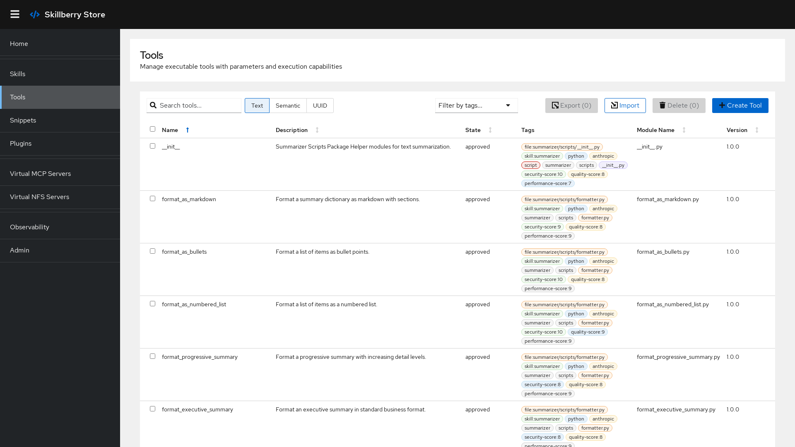
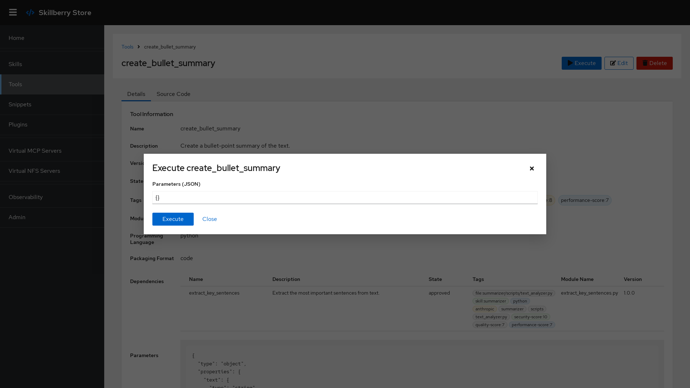
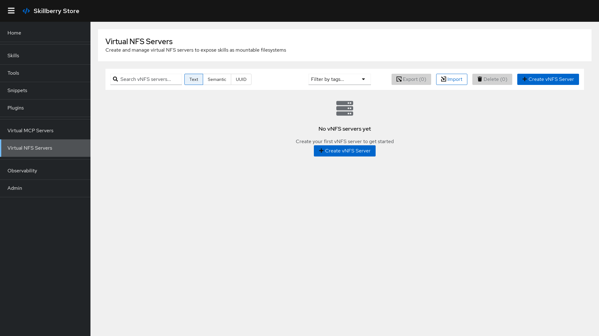
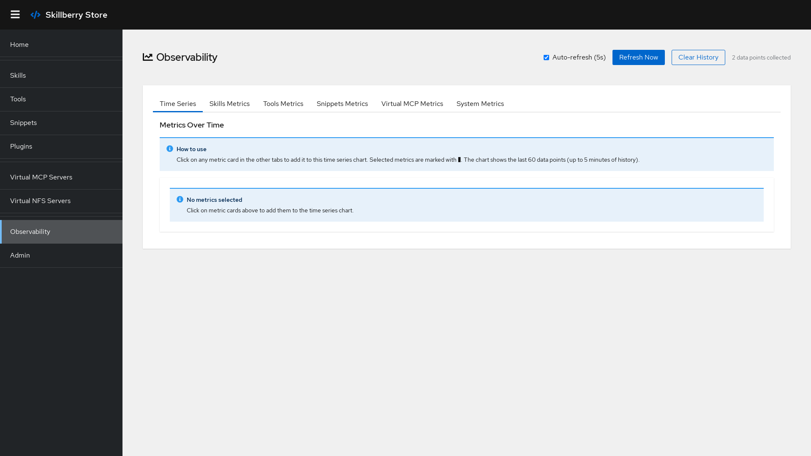

Skillberry Store manages three resource types — tools, skills, and snippets — and exposes them through the interfaces agents actually use: REST, MCP, and mountable filesystems.
Executable units for agentic workloads — a Python module or an MCP-backed tool. Each has state, visibility, tags, a version, and a packaging format, and runs with parameters inside a sandbox.
Reusable groupings of tools and snippets, compatible with the Anthropic skill format (SKILL.md + tools + docs). Import, export, and detect Anthropic skills directly.
Code fragments and documentation stored with syntax highlighting and searchable by content or tags — reference material and shared utilities your tools depend on.
Shortlist tools, skills, and snippets by meaning or by keyword. Every resource is embedded (faiss by default, 384 dimensions) so agents and humans find the right capability fast.

Invoke tools with parameters inside a Docker (or Podman) sandbox, so agent-generated code never touches your host. Dependencies can be auto-detected, and execution is available from the UI, the REST API, the CLI, and over MCP.

A VMCP server exposes a single skill's tools and snippets as a standalone MCP endpoint on its own port. Point Claude, Cursor, or any MCP client at it — or expose every REST operation as MCP tools through the control API at /control_sse.
A vNFS server exposes a single skill as a read-only filesystem over WebDAV or NFSv3. Any tool that can mount a network drive — including Claude Code — reads skill files directly via mount or rclone, no REST API required.
rclone, davfs2, or native NFS
Understand how your tools are used and where your data lives. SBS emits Prometheus metrics and OpenTelemetry traces, and persists resources to the filesystem or to GitHub repositories via version-controlled hooks.
SBS_) and Jaeger-compatible traces
| Interface | What it's for |
|---|---|
| Web UI | Visual management of tools, skills, snippets, VMCP & vNFS servers, and plugins. React + PatternFly, with real-time updates. |
| REST / OpenAPI | FastAPI endpoints with Swagger docs at /docs, using tools-manifest artifacts. |
| CLI | The sbs command — every API operation from your terminal. See the CLI guide → |
| MCP control API | Each REST operation exposed as an MCP tool at /control_sse for agentic workflows. |
| VMCP | Per-skill virtual MCP servers on dedicated ports. |
| vNFS | Per-skill mountable WebDAV / NFSv3 filesystems. |
| Python SDK | Consume the service programmatically via the skillberry-store SDK (also ships the CLI). |
Want to extend it? The plugin ecosystem adds AI-powered creation, evaluation, security scanning, import, and optimization — without touching core code.